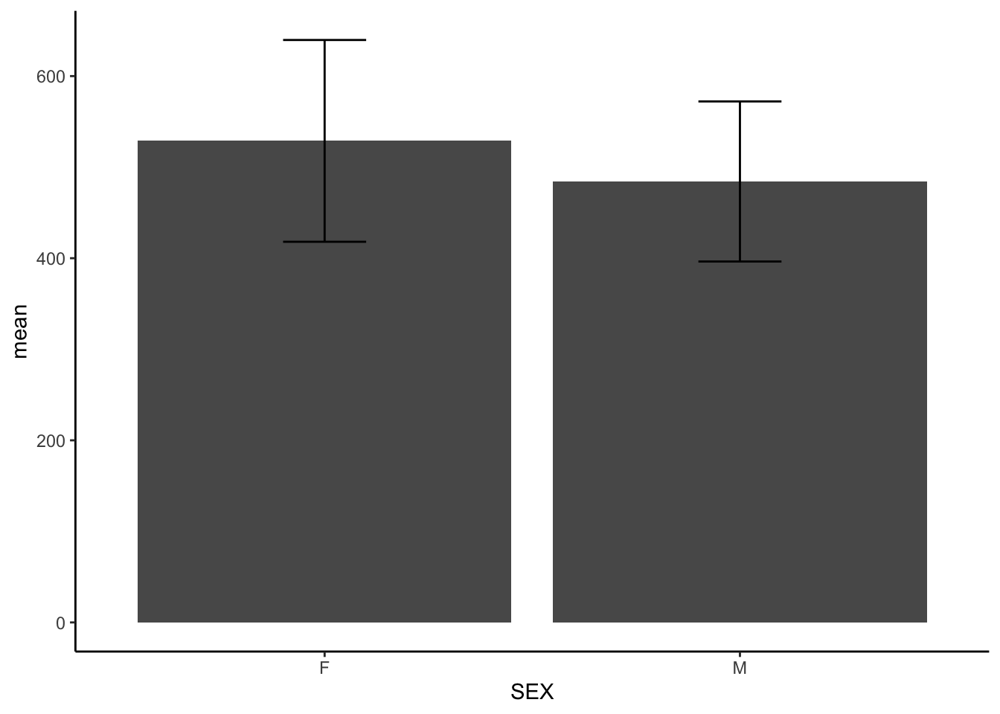
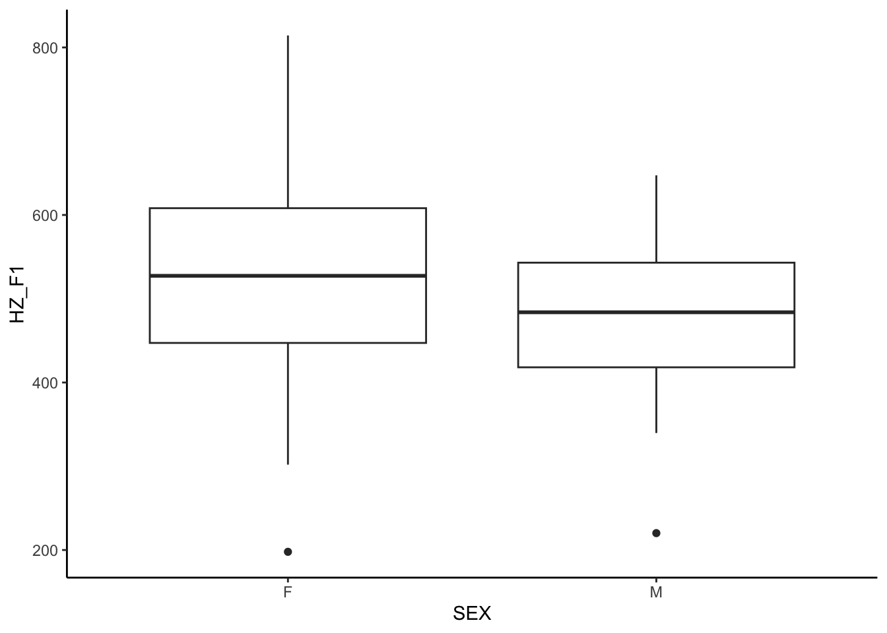
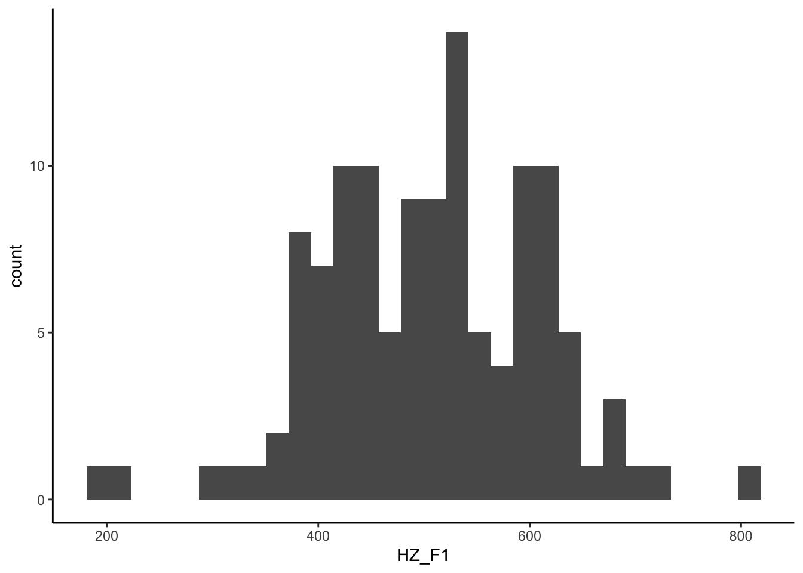

library("readxl")
library("tidyverse")10 t-test
- Load packages:
data_vowels <- read.csv("Vowels_Apache.csv", sep = "\t")10.1 The \(t\)-test
Since the \(\chi^2\) measure exclusively works with categorical variables, a separate test statistic is required if one of them is a continuous variable. The \(t\) statistic is often used for research questions involving differences between sample means. The way \(t\) is calculated depends on the sources of \(X\) and \(Y\): Are they from the same sample or from two (in-)dependent ones?
First, we consider two independent samples from a population:
Sample \(X\) with the observations \(x_1, x_2, ..., {x_n}_1\), sample size \(n_1\), sample mean \(\bar{x}\) and sample variance \(s^2_x\).
Sample \(Y\) with the observations \(y_1, y_2, ..., {y_n}_2\), sample size \(n_2\), sample mean \(\bar{y}\) and sample variance \(s^2_y\).
Definition of the \(t\)-test
The \(t\)-statistic after Welch is given by:
\[ t(x, y) = \frac{|\bar{x} - \bar{y}|}{\sqrt{\frac{s^2_x}{n_1} + \frac{s^2_y}{n_2}}} \]
If there is more than one observation for a given subject (e.g, before and after an experiment), the samples are called dependent or paired. The paired \(t\)-test assumes two continuous variables \(X\) and \(Y\).
In the paired test, the variable \(d\) denotes the difference between them, i.e., \(x - y\). The corresponding test statistic is obtained via
\[ t(x, y) = t(d) = \frac{\bar{d}}{s_d} \sqrt{n}. \]
Note the difference \(\bar{d} = \frac{1}{n}\sum_{i=1}^n{d_i}\) and the variance
\[ s^2_d = \frac{\sum_{i=1}^n({d_i} - \bar{d})^2}{n-1}. \]
Traditionally, the \(t\)-test is based on the assumptions of …
- Normality and
- Variance homogeneity (i.e., equal sample variances). Note that this does not apply to the \(t\)-test after Welch, which can handle unequal variances.
Implementation in R: Manual vs. automatic
By hand:
# Subset the data by sex
data_m <- data_vowels[data_vowels$SEX == "M", ]
data_f <- data_vowels[data_vowels$SEX == "F", ]
# Compute sample means
mean_m <- mean(data_m$HZ_F1)
mean_f <- mean(data_f$HZ_F1)
# Compute sample variances
var_m <- var(data_m$HZ_F1)
var_f <- var(data_f$HZ_F1)
# Determine sample sizes
n_m <- length(data_m$HZ_F1)
n_f <- length(data_f$HZ_F1)
# Compute t-statistic
t_statistic <- abs(mean_m - mean_f) / sqrt((var_m / n_m) + (var_f / n_f))
# Compute degrees of freedom (simple version)
df <- n_m + n_f - 2
# Find the p-value using the cumulative distribution function (CDF) of the t-distribution
p_value <- 2 * pt(-t_statistic, df)Or, more concisely:
t.test(data_vowels$HZ_F1 ~ data_vowels$SEX, paired = FALSE) # there is a significant difference!
Welch Two Sample t-test
data: data_vowels$HZ_F1 by data_vowels$SEX
t = 2.4416, df = 112.19, p-value = 0.01619
alternative hypothesis: true difference in means between group F and group M is not equal to 0
95 percent confidence interval:
8.403651 80.758016
sample estimates:
mean in group F mean in group M
528.8548 484.2740
Important
If at least one assumption of the \(t\)-test has been violated, it is important to use a non-parametric test such as the Wilcoxon-Mann-Whitney (WMW) U-Test instead. In essence, this test compares the probabilities of encountering a value \(x\) from sample \(X\) that is greater than a value \(y\) from sample \(Y\). For details, see ?wilcox.test().
10.2 Workflow in R
10.2.1 Define hypotheses
\(H_0:\) mean
F1 frequencyof men \(=\) meanF1 frequencyof women.\(H_1:\) mean
F1 frequencyof men \(\ne\) meanF1 frequencyof women.
10.2.2 Descriptive overview
We select the variables of interest and proceed calculate the mean F1 frequencies for each level of SEX, requiring a grouped data frame.
Code
# Filter data so as to show only those observations that are relevant
data_vowels %>%
# Filter columns
select(HZ_F1, SEX) %>%
# Define grouping variable
group_by(SEX) %>%
# Compute mean and standard deviation for each sex
summarise(mean = mean(HZ_F1),
sd = sd(HZ_F1)) -> data_vowels_stats
knitr::kable(data_vowels_stats)| SEX | mean | sd |
|---|---|---|
| F | 528.8548 | 110.80099 |
| M | 484.2740 | 87.90112 |
Code
# Plot distribution
## Plot means
data_vowels_stats %>%
ggplot(aes(x = SEX, y = mean)) +
geom_col() +
geom_errorbar(aes(x = SEX,
ymin = mean-sd,
ymax = mean+sd), width = .2) +
theme_classic()
Code
## Plot quartiles
data_vowels %>%
ggplot(aes(x = SEX, y = HZ_F1)) +
geom_boxplot() +
theme_classic()
10.2.3 Check \(t\)-test assumptions
# Normality
shapiro.test(data_vowels$HZ_F1) # H0: data points follow the normal distribution
Shapiro-Wilk normality test
data: data_vowels$HZ_F1
W = 0.98996, p-value = 0.5311# Check histogram
ggplot(data_vowels, aes(x = HZ_F1)) +
geom_histogram(bins = 30) +
theme_classic()
# Variance homogeneity
var.test(data_vowels$HZ_F1 ~ data_vowels$SEX) # H0: variances are not too different from each other
F test to compare two variances
data: data_vowels$HZ_F1 by data_vowels$SEX
F = 1.5889, num df = 59, denom df = 59, p-value = 0.07789
alternative hypothesis: true ratio of variances is not equal to 1
95 percent confidence interval:
0.949093 2.660040
sample estimates:
ratio of variances
1.588907 10.2.4 Running the test
# t-test for two independent samples
t.test(data_vowels$HZ_F1 ~ data_vowels$SEX, paired = FALSE) # there is a significant difference!
Welch Two Sample t-test
data: data_vowels$HZ_F1 by data_vowels$SEX
t = 2.4416, df = 112.19, p-value = 0.01619
alternative hypothesis: true difference in means between group F and group M is not equal to 0
95 percent confidence interval:
8.403651 80.758016
sample estimates:
mean in group F mean in group M
528.8548 484.2740 10.2.5 Optional: Effect size
Cohen’s d is a possible effect size measure for continuous data and is obtained by dividing the difference of both sample means by the pooled standard deviation:
\[\frac{\bar{x} - \bar{y}}{\sqrt{\frac{{(n_1 - 1)s_x^2 + (n_2 - 1)s_y^2}}{{n_1 + n_2 - 2}}}}.\]
Code
library("effsize")
# By hand:
## Compute pooled standard deviation sp
sp <- sqrt(((n_m - 1) * var_m + (n_f - 1) * var_f) / (n_m + n_f - 2))
## Compute Cohen's d
d <- abs(mean_m - mean_f) / sp
# Automatically:
cohen.d(data_vowels$HZ_F1, data_vowels$SEX) # see also ?cohen.d for more details
Cohen's d
d estimate: 0.4457697 (small)
95 percent confidence interval:
lower upper
0.07976048 0.81177897 10.2.6 Reporting the results
According to a two-sample \(t\)-test, there is a significant difference between the mean F1 frequencies of male and female speakers of Apache (\(t = 2.44\), \(df = 112.19\), \(p < 0.05\)). Therefore, \(H_0\) will be rejected.